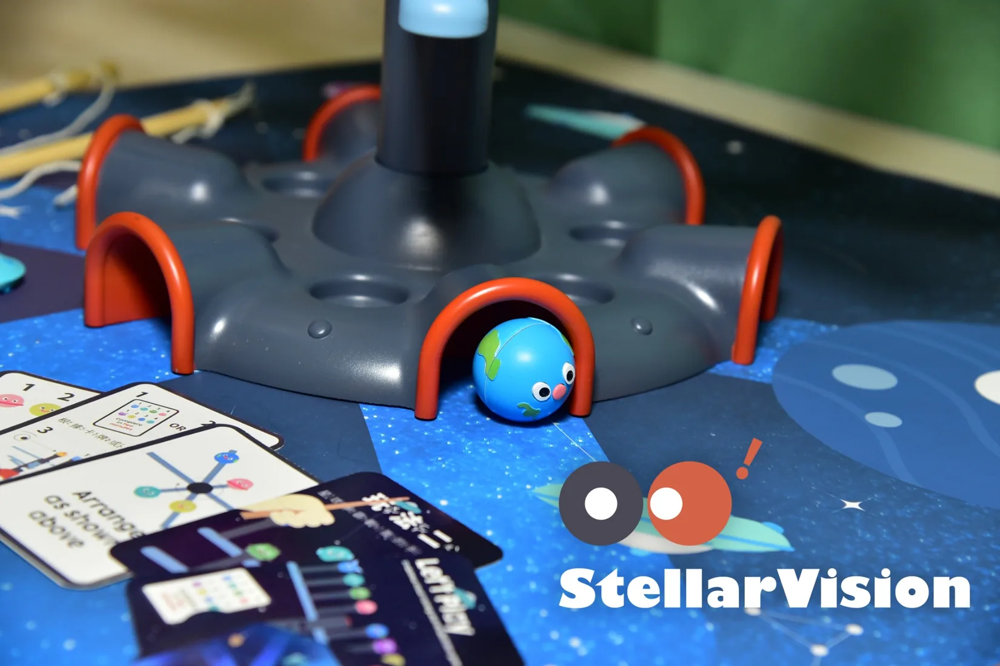
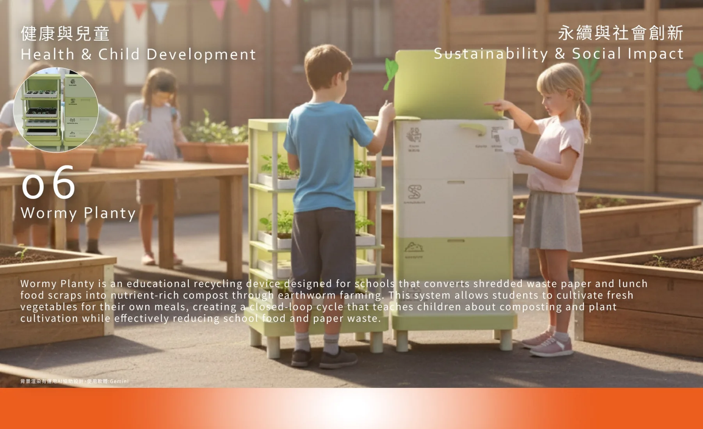
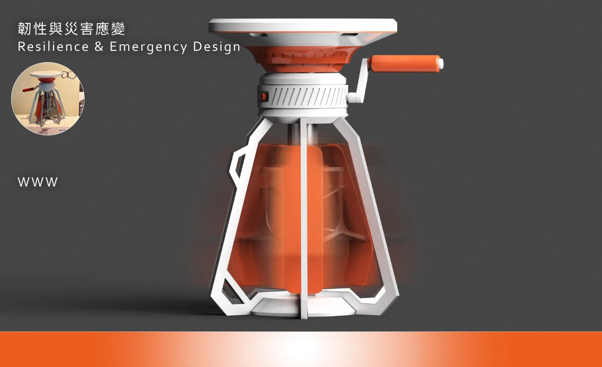
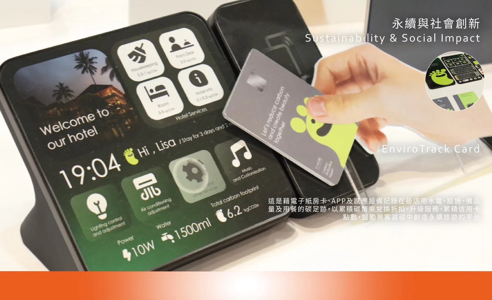
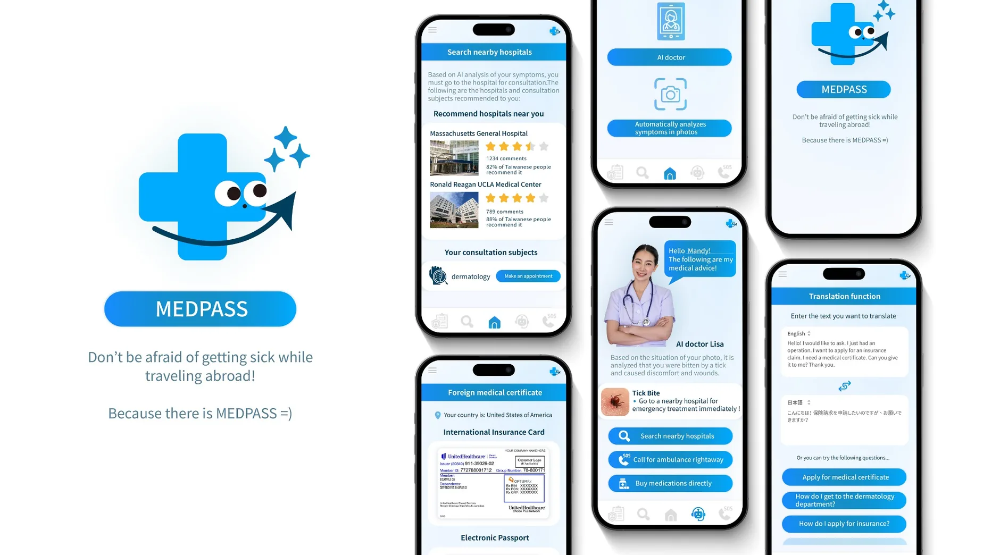

SELECTED PROJECTS / 06 WORKS
想法，
正在發生。
從兒童視覺發展到糧食循環、韌性系統與旅外醫療服務。不同題目，共同的方法：先提出問題，再動手實驗。
EXPLORE THE WORKS
作品總覽

01 / CHILD DEVELOPMENT · 原型與驗證
StellarVision
兒童視覺互動教具｜把視覺探索，變成孩子願意參與的遊戲。
VIEW PROJECT ↗

02 / SUSTAINABILITY · 概念與模型
Renew Harvest Pack
再生糧援包裝系統｜不只送出一份糧食，也留下持續生長的可能。
VIEW PROJECT ↗

03 / SUSTAINABILITY · 概念設計
Wormy Planty
校園循環教育系統｜從校園廚餘，長出一堂生動的自然課。
VIEW PROJECT ↗

04 / RESILIENCE · 概念設計
WWW
災時風力與通訊支援裝置｜當基礎設施失靈，保留關鍵的連結。
VIEW PROJECT ↗

05 / SUSTAINABILITY · 概念設計
EnviroTrack Card
旅宿永續互動服務｜讓每一次入住，都更看得見自己的環境影響。
VIEW PROJECT ↗

06 / SERVICE INNOVATION · 概念設計
MEDPASS
旅外就醫資訊服務概念｜讓人在陌生的地方，也能更有方向地尋求協助。
VIEW PROJECT ↗